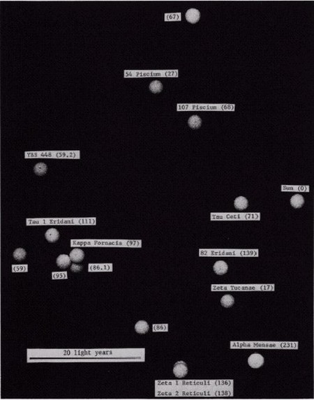
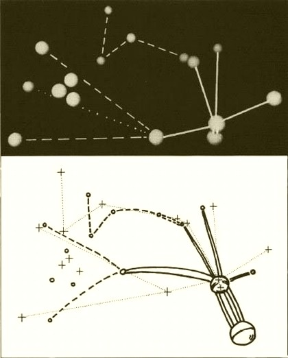
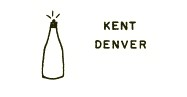
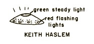
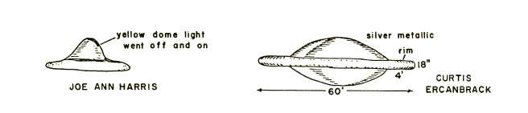
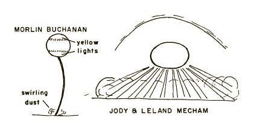

Frank B. Salisbury fait partie du Département de Science des
Plantes à l'Université d'Etat de l'Utah, Logan, UT 84321.
En , un de mes articles fut publié dans ces pages, présentant certaines des raisons pour lesquelles
quelques membres de la communauté scientifique considéraient l'investigation scientifique des OVNIs comme un type de hobby interessant, si ce n'est plus. L'article discutait 5 hypothèses qui avaient été suggérées pour expliquer le phénomène des
ovnis. Il fut avancé qu'aucune des 4 premières n'était suffisante en elle-même ou même combinée aux autres pour
expliquer le phénomène : la grande majorité des observations d'ovnis se révèlent être des phénomènes conventionnels ou
naturels mal interprétés, mais quelques obsbervations intriguantes ne semblent pas coller à cette explication et ont
peu en commun avec celles expliquées ; les ovnis remontent à trop longtemps dans l'histoire pour être des
développements techniques modernes (i.e., des armes secrètes) ; la psychologie est presque toujours impliquée dans les
études sur les ovnis, mais les manifestations psychologiques ne fournissent pas d'explication suffisante ; et nombre
de cas excellents ne peuvent être présentés comme des canulars ou des mensonges (bien qu'il soit généralement
impossible de prouver ce qu'ils ne sont pas). La 5ème hypothèse, celle d'une intelligence extraterrestre (HET),
n'a pas non plus été rigoureusement prouvée de manière scientifique ; aucune n'a été prouvée fausse. Une 6ème
hypothèse acceptable qui correspondrait à tous les faits (i.e., sont-ils des manifestations dans le cadre d'un autre
espace-temps, comme John A. KeelKell, J. A.: 1970. UFOs: Operation Trojan Horse. G. P. Putnam's Sons, New York. 320 pp.Keel, J. A.: 1975. The Mothman Prophecies. Saturday Review Press, New York. 269 pp. l'a
suggéré ?) pourrait ne pas être venue à notre attention ou pourrait ne pas encore avoir été envisagée.
Cet article est rédigé pour relaté quelques evénements importants depuis . Le problème persiste, et
un nombre croissant de scientifiques s'y intéresse. L'APRO liste maintenant plus de 40 consultant de formation scientifique qui
veulent au moins envisager l'HET et prendre part
à l'investigation des cas. Le CUFOS a récemment été organisé (voir plus bas), étant
exclusivement constitué de personnes de formation scientifique (22 jusqu'ici). Quelques scientifiques disent être
convaincus de la validité de l'HET comme une
explication à nombre d'ovnis. D'autres (dont moi-même) ne souhaitent pas aller jusque là, bien que nous soulignions
que les éléments en faveur de l'HET sont
solides. Quelques scientifiques continuent de rejeter l'HET en tant qu'explication du phénomène des
ovnis.
Le niveau de bruit (i.e., le pourcentage de cas expliqués par les 4 premières hypothèses) reste élévé, mais le nombre
absolu de cas réellement intéressants est tout aussi élévé (des dizaines de milliers au moins). La question de savoir
si ces cas pourraient représenter un signal significatif est probablement la principale raison pour laquelle un nombre
croissant de scientifiques s'y intéressent.
Bien sûr les implications exobiologiques de l'HET sont aussi extrêmement intriguantes. On parle
beaucoup aujourd'hui des problèmes liés à la découverte de vie sur d'autres planètes. Mais voyez les implications si
une telle vie nous avait déjà découverts ! (bien que si elle l'a fait, elle ne doit pas souhaiter être amie, au sens
d'établir des relations diplomatiques formelles avec les gouvernements de la Terre). Un certain nombre de
développements intéressants a eu lieu depuis , qui ajoutent autant d'intérêt au sujet. Certains sont
politiques, d'autres organizationnels, d'autres encore methodologiques, et enfin certains concernent des cas
spécifiques.
Développements politiques
Comme chacun sait, un contract fut signé en entre l'USAF et l'Université du Colorado pour soutenir une évaluation scientifique du phénomène ovni sous la direction
de feu Edward U. Condon. Le rapport final fut publié après avoir été
soumis à la NASCondon, E. U. 1969. Scientific Study of Unidentified Flying Objects. Bantam Books, New York. 965 pp.
. Le volume assez épais détaille les enquêtes menées sur 59 cas par l'équipe de Condon, qui (en incluant les consultants, etc.) consistait en 1 psychiatre, 7
psychologues, 6 ingénieurs, 13 physiciens et/ou-astronomes, 4 météorologues, 7
rédacteurs-indexeurs-photojournalistes-programmeurs, et pas un seul biologiste !
L'introduction, rédigée par Condon, est une déclaration extrêmement négative, concluant
que les ovnis ne méritent pas une étude scientifique. Cette déclaration a eu un impact profond et immédiat sur la
pensée du public. Le public est inconstant, cependant, et cet impact négatif ne dura pas trop longtemps. Un sondage
Gallup de indiqua qu'environ 11% de la population des Etats-Unis dit avoir vu un ovni et que plus
de 50% acceptent l'HET ; ces chiffres sont un
peu plus du double de chiffres comparables obtenus en . À mesure que le rapport Condon était
étudié, l'introduction de Condon fut de plus en plus ignorée. Les enquêtes étaient approfondies, et le rapport
inclut un certain nombre de cas non résolus fascinants qui ont été utilisés pour étayer l'HET et the contention that UFO's are indeed
of the highest intrinsic scientific interest.
Furthermore, discovery and publication of a memo written by Robert J. Low (who became
project coordinator) three months before the contract was awarded clearly demonstrated that the study was prejudiced
from the beginning. It includes the following passage: The trick would be, I think, to describe the project so
that, to the public, it would appear a totally objective study but, to the scientific community, would present the
image of a group of nonbelievers trying their best to be objective but having an almost zero expectation of
finding a saucer (Walter Sullivan's introduction to Condon 1969 includes the passage). Furthermore, Condon
himself never investigated a case, but in his lectures and articles on the subject, he often resorted to ridicule
and much preoccupation with the lunatic fringe. Hynek (1972) has presented a balanced scientific criticism of the
Condon and Air Force studies. As an astronomer, he was scientific consultant to the Air Force UFO project for 20
years.
An immediate result of the Condon report was that the Air Force dropped its project Blue Book, the canopy under
which it had been assembling and supposedly investigating UFO sightings since the late 1940's. (Other names for the
project were used during that history.) Most of us who were concerned with scientific UFO investigations were happy
to see this move. Blue Book had never performed an objective study but was committed by directive to the goal of
explaining all cases that came to its attention. It threw up a smoke screen for two decades with its frequent press
releases to the effect that 90+% of the cases had been "explained" and that, given a little more information, the
rest would probably fall into line. (The latter idea, if not always explicitly stated, was at least implied.)
There seems to be evidence that governments are taking a little less prejudiced view of the UFO phenomenon.
Government statements in both France and Brazil have acknowledged that UFO's might represent ETI. There is even
evidence that the United States government and the mass media are taking a somewhat softer line Lorenzen, L. J. 1974.
The Barra Da Tijuca case. Pages 8-10 in C. E. Lorenzen, ed. Proc. of the 5th APRO UFO Symposium, Pottstown, Pennsylvania. Aerial Phenomena Research Organization, 3910 E.
. Already we have seen a number of rather objective movies, TV programs, and the like.
Développements organisationnels
A number of civilian groups devoted to UFO study (at various levels of scientific capability) spontaneously
appeared during the 1950's. In the United States the APRO and the National Investigations Committee on
Aerial Phenomena (NICAP) were among the first and have become the largest and most prestigious of these groups. For
many years their approaches were somewhat different - APRO had more of an international flavor; NICAP was dedicated
to the idea that the Air Force was withholding information - but in recent years they have begun to cooperate in
various formal and informal ways. They have also become somewhat more conservative, and the level of scientific
sophistication of their studies has increased noticeably. The International Fortrean Organization (INFO) has been
interested in the fringe areas that have been ignored by establishment science and that were championed by the late
Charles FortFort, C. 1919. The Book of the Damned. Reprint.
Holt, Rinehart & Winston, New York, 1941.Fort 1923. New Lands. Reprint. Holt, Rinehart & Winston, New York, 1941.Fort 1931. Lo! Claude Kendall. Holt, Rinehart & Winston, New York.Fort 1969. Aliens in the Sky. Putnam and Sons, New York. 217 pp..
Recently this group has placed more emphasis on UFO studies. Numerous other organizations throughout the world could
also be mentioned, but these three are representative of the better ones.
In , the National Enquirer, a weekly newspaper with a circulation of about 8 million and
headquarters in Lantana, Florida, offered a $50,000 award to the first person who can prove that an Unidentified
Flying Object came from outer space and was not a natural phenomenon. A panel of five scientists was chosen to
judge the submitted evidence. This panel includes Rogert Creegan, a philosopher; James Harder, a civil engineer; J.
Allen Hynek, an astronomer; Leo Sprinkle, a psychologist; and myself. We on the panel
agreed to serve without remuneration because we felt that the award offer might turn up evidence that would
otherwise not come to our attention and because the National Enquirer agreed to underwrite research on the better
cases.
Our attitude has been that we could be convinced, but only if the evidence were strong enough to convince nearly
everyone in the scientific community. That is, the evidence would have to include totally convincing, verifiable,
objective data. At our first meeting, it became apparent that most of the entries were only stories people told. We
felt that the better witnesses might realize that their evidence would not be totally convincing and that therefore
they would not bother to submit it. Thus it was suggested to the Enquirer that an annual prize of $5,000 be awarded
for data judged to be most valuable from a scientific standpoint. Many excellent cases have come to the attention of
our panel, and three of the $5,000 awards have been presented (two are reported below). So far most of us on the
panel believe that we have not seen anything approaching total proof, although one or two panel members think that
certain cases still under investigation may come close.
Most recently J. Allen Hynek, director of the Lindheimer Observatory and chairman of
the Astronomy Department at Northwestern University, has established the Center for UFO Studies. Members of this
organization must have high scientific credentials (degrees and publication records) in their fields of specialty.
The center has obtained use of a toll-free police hotline through which cases can be immediately reported (via local
police departments). It is hoped that the center will assist in obtaining the kind of verifiable objective data that
are ultimately necessary, as well as continuing to accumulate the more subjective accounts that, taken as a whole,
continue to provide much insight into the phenomenon.
Développements méthodologiques
UFO buffs have always gotten together for meetings, which have usually included much sociability and considerable
presentation of testimonies from some of the more spectacular UFO witnesses. During the past few years, however,
there has been a decided trend toward more high-level symposia in which the UFO phenomenon is discussed in
scientific terms.
On , a symposium on Unidentified Flying Objects was sponsored by the AAAS at
its meetings in Boston. The symposium, which resulted in a publication Sagan, C., and T. Page. 1972. UFOs - A Scientific Debate. Cornell University Press, Ithaca, N.Y. 310 pp.
, was conducted on an extremely high scientific level. Several participants were knowledgeable about the UFO
phenomenon and presented papers on both sides of the issue. Others knew virtually nothing about the UFO evidence but
presented papers on related topics (e.g., psychology or unusual radar echoes).
Another high-level symposium was in the form of a congressional hearing, convened by Congressman J. Edward RoushRoush, J. E., ed. 1968. Symposium on Unidentified Flying Objects. U.S. Government Printing Office, Washington, D.C. 247 pp.
and later popularized by John FullerFuller, J. G. 1966. The Interrupted Journey. Putnam and Sons, New York. 302 pp.
.
APRO, with its headquarters in Tucson, Arizona, has been sponsoring symposia for the
past three years. These are open to the public, who pay admission fees, which cover transportation of speakers,
tape-recordings, and so on. The proceedings are published (by the Aerial Phenomena Research Organization, 3910 E.
Kleindale Rd., Tucson, AZ 85712, in , in , , and ,
and in ). Although these discussions are somewhat one-sided in that virtually all participants
are at least highly interested in the ETI hypothesis, they have nevertheless achieved an impressive level of
scientific competence. In several cases, they have demonstrated the extent to which a scientist trained in some
given field can apply his training to an examination of the UFO data. (See also symposium of the Mutual UFO Network
Andrus, W. H., Jr., ed. 1974.
MUFON UFO Symposium Proceedings, June 22, Akron, Ohio. Mutual UFO Network, Inc., 40 Christopher Court, Quincy, IL 62301.
.)
Several books have been published in the UFO field since . Some of these are written by
nonscientists who nevertheless are intimately familiar with the UFO problem and provide excellent analyses and
insights Blum, R., and J. Blum. 1974 Beyond Earth: Man's Contact with UFOs. Bantam Books, New York. 248 pp.Fowler, R. E. 1974. UFOs: Interplanetary Visitors. Exposition Press, New York. 365 pp
.Keyhoe, D. E. 1973. Aliens from Space... The Real Story of Unidentified Flying Objects. Doubleday & Co., Garden City, N.Y. 322 pp..
At least three scientifically trained authors have also written books about UFO's: Vallee Vallée, J. 1965. Anatomy of a Phenomenon. Regnery, Chicago. 372 pp.,
Vallée, J.: 1966. Challenge to Science: The UFO Enigma. Regnery, Chicago. 268 pp.Vallee, J.: 1969. Passport to Magonia. Regnery, Chicago. 210 pp., Hynek (1972), and myself
(1974).
In addition to talking and writing about the UFO phenomenon, several scientists have attempted to develop new
approaches. One of these is to accumulate cases in a computer catalogue, which can then be queried for correlations.
One of the largest of these catalogues has been assembled by David Saunders, an original member of the Condon
research group. His UFOCAT includes about 66,000 entries, representing over 40,000 cases. Jacques Vallée
and others have independent computer catalogues, which are generating highly interesting data.
Saunders' UFOCAT, for example, has been used to examine the periodicity and frequencies of UFO sightings (18.8% of
UFO sightings are on Wednesday, only 9.8% on Sunday; a 61-month cycle has become apparent - see National Enquirer,
). Saunders has also examined extrinsic factors in UFO reporting, based upon population and
other demographic data for counties in the United States. He concluded that more UFO reports come from areas of high
population density (the more people, the more see UFO's), from people with a high school education or better, and
from witnesses living in counties where seeing conditions are best (e.g., deserts where the atmosphere is clear much
of the time) and who have readily available newspapers or other possibilities for reporting. When only reports with
the highest degree of "strangeness" (e.g., close encounters, landings, etc.) were examined, however, they bore no
significant relationship to any of the demographic factors so far studied (as would be predicted if the objects were
real and seen by a random sample of the population). Data were discussed at the as yet
unpublished APRO symposium held in Littleton, Colorado, on .
There are also scientists who are investigating UFO cases from the standpoint of psychology or sociology (e.g.,
Eisenbud Eisenbud, J. Psychiatric considerations. In Proc. of Aerial Phenomena Research Organization Symposium held in
Littleton, Colorado, 15 July 1974. Aerial Phenomena Research organization, Arizona, in press.Schwartz, B. E. 1974. UFO table talk (Josh and the psychiatrist). Pages 14-18
in C. E. Lorenzen, ed. Proc. of the 5th APRO UFO Symposium, Pottstown, Pennsylvania. Aerial Phenomena Research Organization, 3910 E. Kleindale Road, Tucson, AZ 85712.
and Sprinkle Sprinkle,L. Psychic impressions of UFO. In Proc. of Aerial Phenomena Research Organization Symposium held in
Littleton, Colorado, 15 July 1974. Aerial Phenomena Research organization, Arizona, in press.). Sometimes these
investigators are willing to consider extrasensory perception or even out-of-body experiences in their studies, and
hypnosis is frequently used as a tool in interviews. There has also been a detailed analysis of photographs Lorenzen, L. J. 1974. The Barra Da Tijuca case. Pages 8-10 in C. E. Lorenzen, ed. Proc. of the 5th APRO UFO Symposium, Pottstown, Pennsylvania. Aerial Phenomena Research Organization, 3910 E.
and several intensive studies of individual cases Spickler, T. 1974. Analysis of an AirGround Multiple-Witness, Radar-Confirmed UFO Report.
Pages 11-14 in C. E. Lorenzen, ed. Proc. of the 5th APRO UFO Symposium, Pottstown, Pennsylvania. Aerial
Phenomena Research Organization, 3910 E. Kleindale Road, Tucson, AZ 85 7 12.
Bons cas récents
Some UFO sightings of recent years are especially provocative. They strongly resist any explanation other than the
ETI hypothesis. Since this is the core of UFO
investigation, it would be appropriate to review such cases at length, but of course space will not permit this. To
provide a little flavor, however, I will very briefly outline a few cases with which I am familiar. In each instance
more detailed summaries have been published Salisbury, F. B.— 1974. The Utah UFO Display: A
Biologist's Report. Devin-Adair Co., Old Greenwich, Connecticut. 286 pp..
Delphos, Kansas.
After dark on , a glowing object was seen by Ronald Johnson, a high school student of
Delphos, Kansas, hovering close above the farmyard behind the house. His dog was
greatly upset, and the object moved away rather quickly, although his parents were able to see it in the sky
before it disappeared. Where the object had landed, or nearly landed, there was a glowing ring of soil. This was
analyzed at great length by several groups of scientists, and because of all the information generated from these
analyses, the case was given the first $5,000 award from the National Enquirer.
The landing-site soil proved to be highly hydrophobic (impossible to wet), both in place and in the laboratory.
By the time it was collected, about a month after the event, it contained relatively large quantities of fungal
hyphae, but not of a variety likely to bioluminesce. Various possible explanations for the glowing, hydrophobic
soil were proposed, but none seemed completely satisfactory, and the case remains a strong one.
Captain Coyn's (sic) Levitating Helicopter.
On , at 11:10 p.m., Captain Larry Coyn[e] was commanding a helicopter flying in Ohio with
three crew members. They spotted a red light on the
horizon, which was approaching the helicopter at high speed on a collision course. Coyne took the controls
and put the chopper into a steep dive. When the UFO was within about 500feetBecause of the nature of this paper, BioScience has not required use of the metric
system. All witness estimates of size, shape, distance,
speed, etc., have been kept in their original format., the crew (bracing for impact) could clearly see it
as a metallic gray, cigarshaped object with a dome on top and a red light on the front. At that point, the chopper
was at about 1500feet elevation, the radio went dead, and instead of colliding the UFO suddenly hovered closely above for a few
seconds (sharply changing speed and direction to do so). A brilliant green spotlight swung from the rear tip of
the UFO, illuminating the cockpit so brilliantly that the red lights inside were pale by comparison. The UFO
turned and sped off to the north. Coyne then put his attention to the controls to stop the power dive, only to
discover that, although the controls were still set for the dive, their elevation was 3800feet. They had been lifted over 2000feet without the controls being changed and with no sensation of lifting!
The four witnesses were highly trained in aerial observation. The UFO came extremely close, exhibiting detailed
structure. Its behavior, including the sharp changes in speed and direction and especially the levitation of the
helicopter, was fantastic to say the least. It seems that the only alternative to the ETI hypothesis is that the
witnesses were not telling the truth, yet in view of the circumstances (not thoroughly discussed here) this seems
highly unlikely to all who have investigated the case. Captain Coyne and his crew members received the second
$5,000 award from the National Enquirer for their recording of the details of this case. (There is no evidence
that they knew about the award before telling their story.)
Betty Hill and Marjorie Fish

Fig. 1. The Marjorie Fish star model. Using data supplied by David Saunders, the author constructed a
model of the map. The star positions were calculated by a special computer program prepared by Dr. Saunders,
which gives the star positions in an x-y-z coordinate system such that the x-y plane is the central plane of the
flattened star duster. This is a photograph of the model taken from directly above the x-y plane at about the z
axis. The scale of the model is 1 cm = 1 light year, and the styrofoam balls are about 2.5 cm in diameter. The
star positions farthest from the sun are accurate to about 2 light years. Labels on the photograph give the star
names (if any) and the Gliese Catalogue number in parentheses.
John FullerFuller, J. G. 1966. The Interrupted Journey. Putnam and Sons, New York. 302 pp.
publicized the experience of Betty and Barny Hill, who were driving late at night through New Hampshire when they
encountered a UFO. They reported that they could not account for over two hours of time, but about two years later
in the office of Dr. Benjamin Simon of Boston, they allegedly recalled under hypnosis what had happened during the
missing interval of time. They had been taken aboard the UFO, examined, and interviewed by the UFO occupants. The
story seems incredible in many ways and almost certainly includes distortions (probably dreamed), but a recent
development has renewed interest in the case.
At one point during the visit on board the UFO, Betty asked about its origin. The leader showed her a
three-dimensional star map. Dr. Simon suggested that she would remember the map with vivid clarity during the week
following the hypnotic session in which the map was mentioned. She was to sketch the map as she remembered it. The
result was published in Fuller's book.

Fig. 2. Top: An oblique photograph of the model in Fig. 1 from the most likely viewing position of
Betty Hill, assuming that Zeta Tucanae (17) is eclipsed by Zeta 1 Reticuli (136). The photograph was taken with
a wide-angle lens from an equivalent distance of 50 light years to Zeta Reticuli (136 and 138), and the relative
sizes of the balls provide the perspective. Lines were drawn on the negative with India ink. Saunders prefers
YBS 448 (59.2) t o Tau 1 Eridani (111), the star chosen by Marjorie Fish for the upper left position. Clearly
the choice of Tau 1 Eridani (111) makes a better match with the Betty Hill map, but this star is considerably
less likely to have life-supporting planets than YBS 448 (59.2). Bottom: Betty Hill's map compared with
Marjorie's model. (See text.) The heavy, free-hand lines are traced from Betty's drawing, the crosses and fine
dotted lines from Marjorie's photograph of her model. (Original drawing was by Marjorie Fish, used with
permission.) (From Salisbury, F. B.— 1974. The Utah UFO Display: A
Biologist's Report. Devin-Adair Co., Old Greenwich, Connecticut. 286 pp., with permission.)
Marjorie Fish, a grade school teacher in Oak Harbor, Michigan, read Fuller's book and was intrigued with the star map. Since about
she had studied the astronomical principles required to plot in three-dimensional space the
positions of stars in the vicinity of the sun. Her initial attempts showed no relationship to the Betty Hill star
map, but after the publication of a new star catalogue in , she made corrections in several of
the star positions. Furthermore, Marjorie Fish decided that she should eliminate from
her model all stars not likely to have planets suitable for life as we know it (stars on either end of the main
sequence, double star systems, and variable stars). When the corrections were made and the unlikely stars
eliminated, a pattern resembling the Betty Hill map soon became apparent (after assuming that one of the stars
eclipsed another, which assumption provided the correct number of stars and determined the viewing position).
Results of this exercise are shown in Figs. 1 and 2, although there are many more details that could be considered
if space allowed Dickinson, T. 1974. The Zeta Reticuli incident. Astronomy 2(12): 4-18..
The resemblance between the Betty Hill and the Marjorie Fish star maps could be pure
coincidence. No one has yet thought of a convincing way to assess the statistical probability that this is the
case. On the other hand, the history of Marjorie Fish's map building and the outstanding similarities of certain
details such as the two close stars and the triangle of three are very impressive.
La vague de 1973
Durant l'automne , de nombreux ovnis furent signalés dans le monde entier. It is too soon to
expect a detailed summary of all this material. Probably it will take years to assemble, if anyone is working on
it. Blum and Blum Blum, R., and J. Blum. 1974 Beyond Earth: Man's Contact with UFOs. Bantam Books, New York. 248 pp.
published a popular book which summarizes some of the more spectacular cases.
Probably the one that received the most attention from the news media was la rencpntre le of two
fishermen in Pascagoula, Mississippi, with a UFO and its strange silvery-skinned beings
who levitated the fishermen into the craft where they were apparently subjected to some kind of automated
examination. The story is a completely wild one, yet those who have investigated the two fishermen come away
impressed. There seems to be no doubt that they had an extremely traumatic, shocking experience. There is
certainly no obvious reason why or how they should or could fabricate their wild story while in such a state of
emotional upset. At the same time, the story is so completely contrary to all our preconceptions that we find it
virtually impossible to accept. Captain Coyne's levitating helicopter is almost as contrary to our present
convictions about how the universe functions, but for some reason it is not as intrinsically repulsive to us as
the strange beings at Pascagoula.
Les apparitions d'ovnis du Bassin de Uintah
Ma propre rencontre la plus rapprochée avec le phénomène ovni eut lieu via un certain nombre d'interviews de
témoins d'ovnis dans le nord-est de l'Utah Salisbury, F. B.— 1974. The Utah UFO Display: A
Biologist's Report. Devin-Adair Co., Old Greenwich, Connecticut. 286 pp.. J'ai commencé à interroger des
témoins en et ai continué ces interviews sporadiquement jusqu'à aujourd'hui. Les données
initiales furent assemblées par Joseph Junior Hicks, un professeur de science au
collège de Roosevelt, Utah. Il s'est fait une réputation locale d'autorité mondiale sur
les ovnis, et des témoins lui ont rapporté leurs observations. Bien l'espace manque pour le contenu présenté ici,
ces récits sont au coeur du sujet pour ce qui me concerne. Par conséquent, je présenterai les trames les plus
simplifiées de 7 cas tirés des 80 du fichier de Hicks, plus 1 (le 1er) qui me fut
rapporté directement. Ceux-ci incluent certains des meilleurs cas, mais d'autres sont tout aussi bons Certains témoins du Bassin de Uintah ont fait des dessins de ce qu'ils ont vu. Pour ceux
spécifiquement mentionnés ici, les dessins ont été placés à côté de leurs histoires. D'autres ont été
regroupés en figure 3. (de Salisbury, F. B.— 1974. The Utah UFO Display: A
Biologist's Report. Devin-Adair Co., Old Greenwich, Connecticut. 286 pp.
with permission.).
Dean Powell était allongé à l'arrière de son camion de la poste vers 12:00 lorsqu'il vit un objet argenté en
survol devant un e promontoire à moins de 0.25mile de là. Il fut rejoint par un autre témoin qui vit l'objet avant qu'il parte rapidement vers l'est.

Le , Kent Denver et des amis à lui virent une boule de feu rouge danser aux alentours
de l'horizon pendant près de .

Un peu plus tard dans la soirée, Verl et Leah Haslem rentraient chez eux en voiture après une réunion dans
une banque lorsqu'il virent un objet rouge brillant survoler leur maison. Alors qu'ils se dépêchaient
d'arriver chez eux à environ 1mile de distance, l'objet partit vers la gauche (au sud-est) et disparut dans le ciel comme un météore à l'envers.
Pratiquement au même moment, Joe Ann Harris, avec 4 filles indiennes à l'arrière de sa voiture et une grande
femme indienne à l'avant, rencontre un ovni. L'objet apparaît d'abord comme une lumière clignotante au loin
mais se rapproche rapidement de leur automobile jusqu'à être entre 50feet et 100feet devant la voiture. Il faisait au moins 50feet de diamètre, plat à la base et avec un dôme au-dessus. Les filles indiennes furent terrifiées et au sol à
l'arrière de la voiture.

La grande femme indienne était sous la boîte à gants. Joe Ann reculait avec sa voiture pour s'éloigner de
l'objet lorsqu'une autre automobile approcha derrière eux. L'obbjet partit apparemment en un instant pendant
que Joe Ann avait la tête tournée, à faire reculer la voiture. À peu près au même moment, Estel Manwaring
roulait à 2miles ou 3miles de là avec une fille indienne à l'avant. Ils virent apparemment le même objet, cette fois avec des lumières
brillantes clignotant autour de sa circonférence. Après s'être garée pour mieux voir, l'objet partit droit en
l'air très rapidement.
Thyrena Daniels rencontra après la tombée de la nuit un énorme objet sphérique, plat à la base, rouge luisant,
avec des flammes bleuâtres à rougeâtres qui en sortaient horizontalement de chaque côté. L'ovni, restant
entre 100feet ou 200feet, la précédait alors qu'elle roulait à près de 30miles de Vernal à Roosevelt, Utah.
Un ovni brillant rouge traversa le Bassin de Uintah en étant obsbervé par au moins 40 témoins éparpillés
(plusieurs en groupes). Richard Hackford vit l'objet approcher alors qu'il conduisait un camion en haut d'un
virage en épingle à cheveux d'une route d'exploitation du bois dans les montagnes de Uinta. L'obbjet survola
l'habitacle de son camion, illuminant brillamment les environs. Des travailleurs de nuit à l'usine de phosphate,
à peut-être 20miles de là, virent l'objet traverser le bassin, rester en survol un moment là où Hackford conduisait son camion,
puis partir dans le ciel, à nouveau comme un météore
à l'envers.
Les enfants de Clyde McDonald ont dit à leurs parents qu'une planche Ouija leur avait dit qu'un ovni
apparaîtrait à 20:00 au-dessus de l'Hospital de Roosevelt. Les enfants sortirent pour
le voir, et effectivement la sphère rouge brillante était là juste comme ils l'avait prédit ! Leurs parents et
plusieurs autres personnesde la ville furent aussi témoins.
Curtis, Kevin et Bevin Ercanbrack (frères) conduisaient un tracteur hors d'un champ pour enterrer un veau mort
lorsque, en plein jour, ils virent un grand objet argenté survoler le terrain. Avant que l'objet parte, les 3
garçons arrivèrent entre 50feet et 100feet de lui, d'après des estimations ultérieures.
Morlin Buchanan et Richard Faucett chassaient des oies sur Pelican Lake à peu près au moment du coucher du Soleil lorsqu'ils observèrent ce qui semblait être un ballon
parfaitement sphéricque avec une "chaîne" qui en pendait en-dessous. Après avoir roulé 8miles avec des arrêts pour observer l'objet aux jumelles tout du long, ils arrivent à peut-être 0.25mile de lui, le décrivant comme une énorme sphère éclairée au sommet et à la base (à ce moment il faisait sombre)
et avec une colonne de poussière tournoyante ou quelque chose suspendu d'en-dessous. La colonne faisait dans les
4feet de diamètre (ils le décrivaient comme un tunnel de vent) et parfaitement égale en diamètre du haut au
bas (autrement ça leur aurait rappelé un entonnoir de tornade). Finalement, le "tunnel de vent" semble être
aspiré rapidement dans l'objet, qui disparaît alors dans un éclair de lumière.

Ovnis de Buchana Meecham dans le Basin de Uintah
Leland Mecham et son jeune fils, Jody, rentraient à la maison à dos de cheval tard dans la nuit lorsqu'ils
virent un énorme objet rouge luisant à peut-être 5miles à 7miles d'eux, presque sur l'horizon mais devant des montagnes plus éloignées. Des rayons de lumière semblent émaner
vers le sol depuis l'objet, et des nuages de poussière dust rougeoyants pouvaient être vus là où les
rayons touchaient le sol. Une arche de lumière blanche s'étend au-dessus de l'objet. Tandis que Leland et Jody
perdirent de vue l'objet derrière des arbres, Dee Hullinger et sa femme le regardaient tourner une fois sur son
axe et foncer dans le ciel à grande vitesse. La lueur rouge et le dôme de lumière blanc restèrent pendant
, s'atténuant de plus en plus jusqu'à disparaître.
Ovnis du bassin de l'Uintah - Dessins de témoins
Ces cas ont un tel degré d'étrangeté qu'il semble pratiquement impossible de penser qu'il s'agit de phénomènes
naturels mal interprétés ou d'armes secrètes. Ayant parlé aux témoins, je ne peux personnellement accepter l'idée
qu'ils aient pu mentir ou halluciner, bien que je ne puisse prouver le contraire.
Logique et défis
The logic of the UFO problem remains essentially as I described it in : Science is good at
disproving hypotheses, but such an approach fails in this area because it is always impossible to know for certain
that every single case has been proved not to be the product of ETI. Nevertheless, we continue to disprove
cases, and the ones we are unable to disprove continue to accumulate and impress us. We cannot induce from the
disproven cases that the unsolved cases could also be disproven if only we had more data; the unsolved cases often
have little in common with the solved ones.
Neither can we argue that the UFO's cannot represent ETI because that would be impossible. We don't
know enough to make such a statement. Our inability to explain the lack of contact if the UFO's do represent ETI is also not a proof that they do not.
On the other hand, it seems that if we had the right kind of contact, the ETI hypothesis could be proven. It is even
possible that verifiable, objective data could be of such a nature that the ETI hypothesis would be amply demonstrated.
The trouble is that we have not been able to obtain such proof. Perhaps we haven't thought hard enough about the
problem. It seems to me that we even need to consider extreme claims, such as those made by people who claim
personal contact with UFO occupants (who have become known as "contactees"),
simply because by their very nature they might conceivably produce verifiable, objective data. For example, such a
person might predict the time and place of a UFO appearance.
It is virtually impossible for the UFO researcher to refrain from taking the next logical step beyond those
discussed so far. What does it mean if the UFO's do represent the intelligent visitors? What are they doing, and
what will be their effects upon our philosophies and upon the world of which we are a part?
The immediate thought when the ETI hypothesis
became a point of public discussion in is that our visitors have just discovered our solar system
and are making preliminary observations. Several aspects of the phenomenon make this "exploration-of-our-planet"
hypothesis a difficult one to accept. The most obvious of these is the observation that the UFO's have been around
for hundreds to thousands of years. That ought to be plenty of time for exploration; why not now land and be
friends? Many of the cases also seem to belie this kind of an explanation. Do the ones summarized above sound like
an exercise in planetary reconnaissance?
To me, they appear staged. I have the impression that it is all a display, a show, a circus. They seem to want to
be seen although not for long. After the witness has had a good chance to look them over, then they typically depart
in haste. What does it all mean? It is possible that we simply cannot fathom the motives of extraterrestrial
visitors.
Are we some kind of experiment? How could we know?
Perhaps the so-called contactees best illustrate the difficulties of scientifically researching UFO's. When they
tell us of their trips to Venus and of the totally impossible conditions there, we simply know that they must be
lying. But there are so many of them, and they seem so sincere. Is it possible that our visitors want to confuse us?
Is it part of their experimental strategy to pick up earthlings, fill their minds with fantastic pictures known by
other earthlings to be untrue, and command them to go back and tell people about these things? Or to generate in the
minds of two Pascagoula fishermen fantastic, but totally convincing, hallucinations (as suggested by Keel Keel, J. A.: 1975. The Mothman Prophecies. Saturday Review Press, New York. 269 pp.)?
Certainly the result of such exercises would be effectively to dissuade members of the scientific community from any
interest in the UFO phenomenon. But why? In any case, it doesn't seem to be working too well, because we are
apparently approaching a time when more and more scientists are considering the UFO enigma in more and more
respectable ways.
One more philosophical point deserves comment. We seem to be living in an age of superstition or scientific
backlash, in which a sizeable segment of the public apparently knows virtually nothing about the application of
reason in seeking for truth (i.e., about the scientific process) but wholeheartedly accepts astrology, thinking
plants, engines that run without fuel, occult topics such as ghosts and astroprojection, and numerous other
aberrations from the spirit of modern science. Inevitably, belief in UFO's is closely associated with all this, and
indeed many people who are caught up in the UFO craze (especially those following one or another of the socalled
contactees) exhibit all the symptoms of those engaging in the other superstitions. A common viewpoint, for example,
is that science is hopelessly off the track, whereas the "believer" has the true knowledge of the universe.
This poses a dilemma for scientists who would investigate UFO's. They must continually be mindful that what a
public thinks about a subject should not be a criterion of whether it is suitable for scientific study. The
important point is whether the scientific approach can be applied; that is, whether one can think of meaningful and
testable hypotheses and observations and whether it is possible to be objective.
UFO's certainly pose some special problems, but with care I think that a scientific approach is possible. The trick
is simply to remain objective against all outside pressures. For example, one must avoid the temptation to answer
the often-repeated question: "Do you believe in UFO's?" Science doesn't "believe" in things; it seeks truth by the
application of logic to objective data (which are admittedly difficult to obtain when it comes to UFO's).
UFOologists must do this even while interacting closely with people, including UFO witnesses, who do not have their
training or viewpoint and who may fail to understand why scientists don't accept the "obvious."